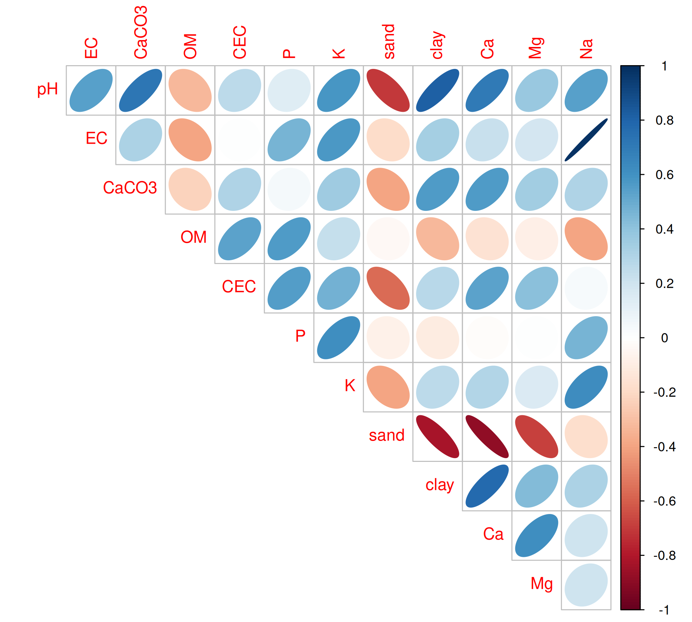
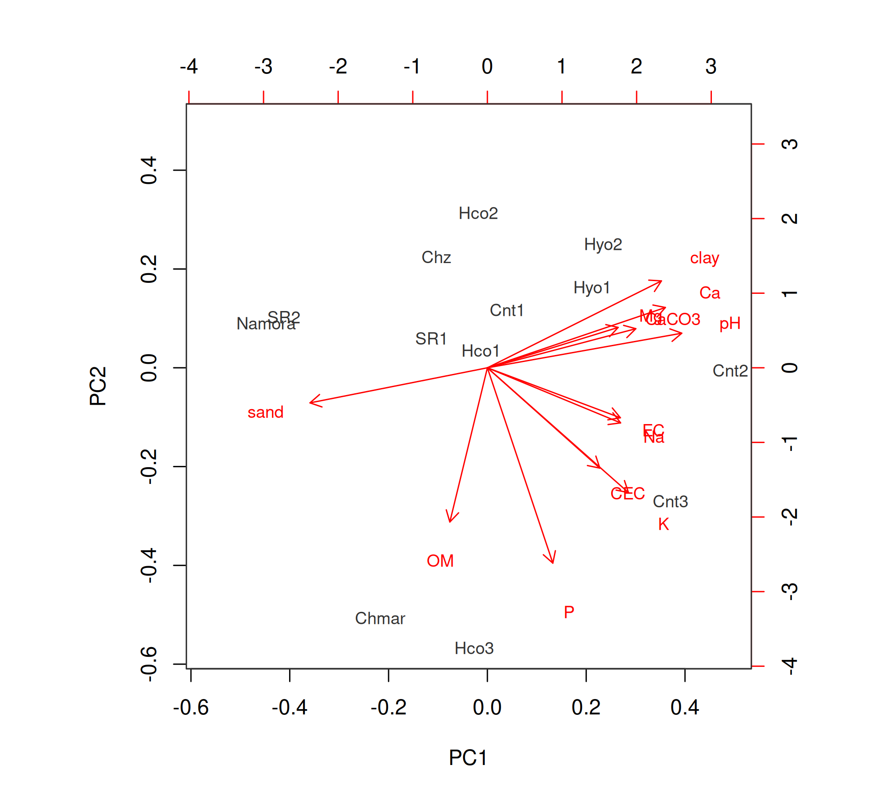

Explain principal components, eigenvalues and loadings, run PCA on the correlation matrix, decide how many components to keep, interpret loadings and scores and read a biplot.
Agricultural studies often record many correlated variables on each unit: a dozen soil properties per site, twenty morphological traits per accession, several quality parameters per sample. Multivariate methods analyse these variables together. Principal component analysis (PCA) is the most widely used. It replaces \(p\) correlated variables by a smaller number of new, uncorrelated variables, the principal components (PCs), that retain most of the information (variance) in the data.
27.1 The idea
The first principal component is the linear combination of the (standardised) variables
that has the largest possible variance, subject to \(\sum_j a_{1j}^2 = 1\). The second PC has the largest variance among combinations uncorrelated with the first, and so on. Mathematically:
the coefficients (loadings) of the PCs are the eigenvectors of the correlation (or covariance) matrix;
the variance of each PC is the corresponding eigenvalue\(\lambda_k\);
the proportion of total variance explained by PC\(_k\) is \(\lambda_k / \sum \lambda_j\) (for standardised variables, \(\sum\lambda_j = p\)).
Note
If the variables are measured in different units (pH, percentages, ppm), PCA must be done on the correlation matrix, i.e. on standardised variables. In R this means scale. = TRUE in prcomp(). Otherwise the variables with the largest variance dominate the analysis.
27.2 Example 27.1: soils of 13 localities in Peru
The soil data in agricolae give the physical and chemical properties of soils from 13 localities in Peru, analysed at La Molina National Agrarian University. We use 12 properties: pH, electrical conductivity (EC), calcium carbonate (CaCO3), organic matter (MO in the data, renamed OM), cation exchange capacity (CIC, renamed CEC), available P and K, sand and clay content, and exchangeable Ca, Mg and Na.
The silt content (slime in the data) is left out deliberately: sand + silt + clay = 100%, so any one of the three is an exact linear function of the other two. Including all three would produce a component with zero variance.
library(corrplot)
corrplot 0.95 loaded
corrplot(cor(x), method ="ellipse", type ="upper", diag =FALSE)

Many of the soil properties are strongly correlated, so a few components should summarise them well.
Large loadings (in absolute value) show which variables dominate each component:
PC1 has high positive loadings for pH, Ca, clay and CaCO3 and a negative loading for sand. It contrasts fine-textured, calcareous, base-rich soils (high scores) with sandy, acidic soils (low scores).
PC2 is dominated by P, organic matter, K and CEC (all with the same sign): a fertility component.
PC3 has high loadings for EC and Na, with the opposite sign to organic matter and CEC: a salinity–sodicity component.
Tip
The sign of a principal component is arbitrary: multiplying all loadings and scores of a component by −1 gives the same solution. Different programs (and versions) may therefore report opposite signs. Interpret the pattern of loadings, not their absolute sign.
27.3.3 Scores
The scores are the values of the components for each sample:
The localities from the coastal Cañete valley (Cnt2, Cnt3) have the highest PC1 scores (calcareous, clayey soils), while Namora and San Ramón (SR2) have the lowest (sandy, acidic soils).
27.3.4 Biplot
A biplot shows the scores (points) and loadings (arrows) together. Samples lie in the direction of the variables in which they are high; arrows pointing in similar directions indicate positively correlated variables.
biplot(pca, cex =0.8, col =c("grey20", "red"))

27.4 PCA with FactoMineR and factoextra
The FactoMineR and factoextra packages (Husson et al. 2023; Kassambara and Mundt 2020) give richer output and publication-quality graphs. PCA() standardises the variables by default.
library(FactoMineR)library(factoextra)
Loading required package: ggplot2
Welcome to factoextra!
Want to learn more? See two factoextra-related books at https://www.datanovia.com/library/principal-component-methods
Attaching package: 'factoextra'
The following object is masked from 'package:agricolae':
hcut
res <-PCA(x, graph =FALSE)round(res$eig[1:5, ], 2)
Warning: This FactoMineR PCA result contains only 5 eigenvalues and does not
include the complete spectrum. Refit the PCA with a larger `ncp` before drawing
a complete scree plot.
Data reduction: summarise many traits by a few components for display or further analysis.
Grouping: plot genotypes, sites or samples on the first two PCs to see clusters (e.g. in germplasm characterisation).
Indices: use the first PC as a composite index (e.g. a soil quality index).
Principal component regression: use the uncorrelated component scores as predictors in place of highly collinear variables (Chapter 26).
27.6 Live R laboratory
Principal components of flower measurements
Edit the code, then select Run R. The first run downloads R into your browser and may take a little time. Copy code lets you use the example in RStudio.
X <- iris[, 1:4]pca <-prcomp(X, scale. =TRUE)summary(pca)round(pca$sdev^2, 3) # eigenvaluesround(pca$rotation, 2) # loadingsscreeplot(pca, type ="lines"); abline(h =1, lty =2, col ="red")plot(pca$x[, 1:2], pch =19, col =as.integer(iris$Species),xlab ="PC1", ylab ="PC2")
Investigate. Repeat the analysis with scale. = FALSE. Which variable now dominates PC1, and why is standardising necessary when variables have different variances?
27.7 Practical 29 and exercises
Repeat the PCA of the soil data including the micro-nutrients B, Cu, Fe, Mn and Zn. How many components have eigenvalues greater than 1?
Carry out a PCA of the four measurements in iris and plot the scores of the first two components coloured by species. Which variables dominate PC1?
Using the yacon data in agricolae, average the traits height, stalks, roots, FOS, brix, foliage and dry over replications for each entry and locality, and perform a PCA. Interpret the first two components.
Historical Insights
Karl Pearson described the geometric idea of principal components in 1901 and Harold Hotelling developed principal component analysis as a statistical method in 1933.
27.8 Chapter Summary
Fill in the blanks
Answers are given at the end of the chapter.
Principal components are linear combinations of the original variables that are mutually __________.
The variance of a principal component is the corresponding __________.
The coefficients of a component are called __________.
Variables in different units require PCA on the __________ matrix.
Kaiser’s criterion retains components with eigenvalues greater than __________.
The values of the components for each unit are called __________.
A __________ shows scores and loadings together.
The sign of a principal component is __________.
Short-answer questions
What is the purpose of PCA?
Why must variables be standardised before PCA in most agricultural applications?
Describe three rules for choosing the number of components.
How is a biplot interpreted?
Why was silt excluded from the soil PCA?
Numerical and conceptual questions
Answers are given at the end of the chapter.
Twelve standardised variables give a first eigenvalue of 5.27. What proportion of variance does PC1 explain?
The first three eigenvalues are 5.27, 2.37 and 2.24. Find the cumulative proportion.
How many components does Kaiser’s criterion retain if the eigenvalues are 5.27, 2.37, 2.24, 0.78 and 0.55?
Husson, Francois, Julie Josse, Sebastien Le, and Jeremy Mazet. 2023. FactoMineR: Multivariate Exploratory Data Analysis and Data Mining. http://factominer.free.fr.